Fuera de mis responsabilidades, mis pasatiempos favoritos incluyen jugar videojuegos, escuchar música, realizar salidas nocturnas, emprender viajes largos y ver películas de diversos géneros. Asimismo, me interesa coleccionar perfumes de diseñador. Estas actividades forman parte de mi tiempo libre y reflejan mis intereses personales.
MIS VIDEOJUEGOS FAVORITOS:
Valorant:
Valorant es un videojuego de disparos en primera persona de estilo táctico desarrollado por Riot Games, lanzado oficialmente en 2020. Combina la precisión y estrategia de shooters como Counter-Strike con habilidades únicas de cada personaje, lo que introduce un componente de estrategia adicional. Su enfoque principal es el juego por equipos, generalmente en partidas 5 vs 5, donde un equipo ataca plantando la “Spike” (una bomba) y el otro defiende intentando desactivarla o eliminar al equipo contrario.
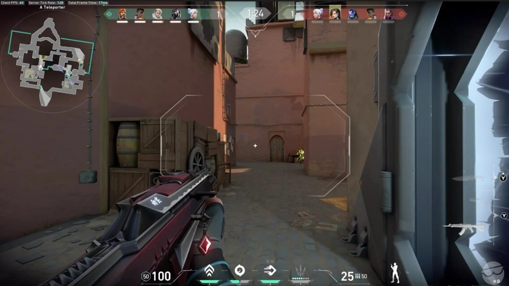
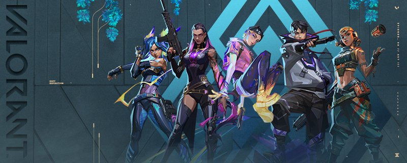
Clash Royale:
Clash Royale es un videojuego de estrategia en tiempo real desarrollado por Supercell, lanzado en 2016. Combina elementos de juegos de cartas coleccionables, defensa de torres y batallas multijugador en línea. El objetivo principal es destruir las torres enemigas mientras defiendes las propias, utilizando una baraja de cartas que representan tropas, hechizos y estructuras.
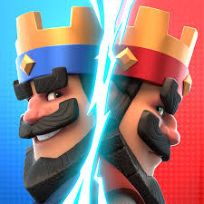
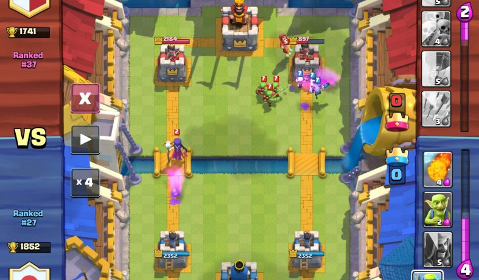
Need for Speed: Most Wanted - Black Edition:
Need for Speed: Most Wanted Black Edition es una edición especial del popular videojuego de carreras Need for Speed: Most Wanted, desarrollado por EA Black Box y lanzado en 2005 para PC, consolas y dispositivos portátiles. Esta versión se centra en la experiencia de carreras ilegales urbanas, persecuciones policiales intensas y la personalización de automóviles de alto rendimiento.
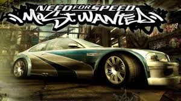
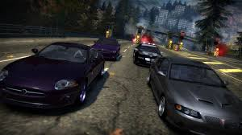
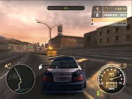
Five Nights at Freddy's 2:
Five Nights at Freddy's 2 es un videojuego de terror y supervivencia desarrollado por Scott Cawthon, lanzado en 2014. Es la segunda entrega de la popular saga Five Nights at Freddy's (FNaF) y se centra en la mecánica de vigilancia y estrategia para sobrevivir noches consecutivas en un restaurante lleno de animatrónicos peligrosos.
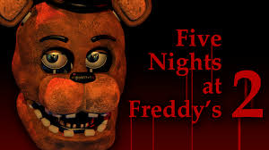
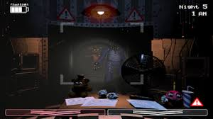
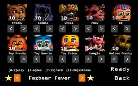
Call of Duty: Mobile:
Call of Duty: Mobile es un videojuego de disparos en primera persona (FPS) y tercera persona, desarrollado por TiMi Studios y publicado por Activision, lanzado en 2019 para dispositivos móviles iOS y Android. Combina la experiencia clásica de Call of Duty con modos multijugador adaptados a pantallas táctiles, incluyendo partidas competitivas, battle royale y eventos temporales.
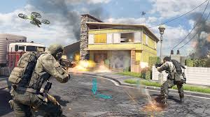
MIS ARTISTAS FAVORITOS:
Fuerza Regida:
Fuerza Regida es un grupo musical estadounidense de música regional mexicana, originario de San Bernardino, California (Estados Unidos) y formado en 2015. Comenzaron tocando covers en eventos locales, pero con el tiempo desarrollaron su propio estilo y se convirtieron en una de las bandas más influyentes dentro del movimiento moderno de corridos.
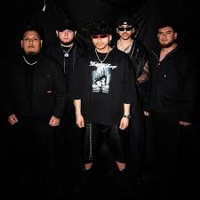
Junior H:
Junior H — cuyo nombre real es Antonio Herrera Pérez — es un cantante y compositor mexicano nacido el 23 de abril de 2001 en San Juan Cerano, Guanajuato, México. Es ampliamente reconocido como uno de los artistas más influyentes del subgénero “corridos tumbados”, una fusión entre la música regional mexicana tradicional y elementos urbanos como el trap y el hip‑hop.
Chirstian Nodal:
Christian Nodal (nombre real Christian Jesús González Nodal) es un cantante, compositor y músico mexicano nacido el 11 de enero de 1999 en Caborca, Sonora, México. Es uno de los artistas más importantes de la música regional mexicana moderna, reconocido por popularizar un estilo propio llamado “mariacheño”, que fusiona la música mariachi con elementos norteños y contemporáneos.
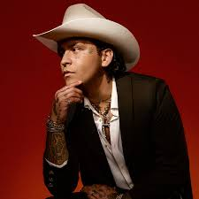
Myke Towers:
Myke Towers es un rapero, cantante y compositor originario de Río Piedras, Puerto Rico, nacido como Michael Anthony Torres Monge el 15 de enero de 1994. Es uno de los artistas más destacados de la música urbana latina, especialmente en géneros como reguetón, trap latino y pop urbano
Bad Bunny:
Bad Bunny (nombre real Benito Antonio Martínez Ocasio, nacido el 10 de marzo de 1994 en Vega Baja, Puerto Rico) es uno de los artistas latinos más influyentes y exitosos de la música urbana contemporánea. Es rapero, cantante, compositor, productor musical e incluso ha incursionado en la actuación y la lucha libre profesional.
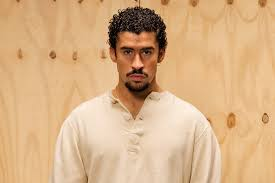
SALIDAS NOCTURNAS Y VIAJES LARGOS:
Me encanta salir de noche y hacer viajes largos. Hay algo especial en estar en camino hacia cualquier destino y descubrir más sobre el país. Disfruto hacerlo en moto o en carro, no importa el medio, lo importante es vivir el momento, pasarla bien y disfrutar cada parte del viaje.
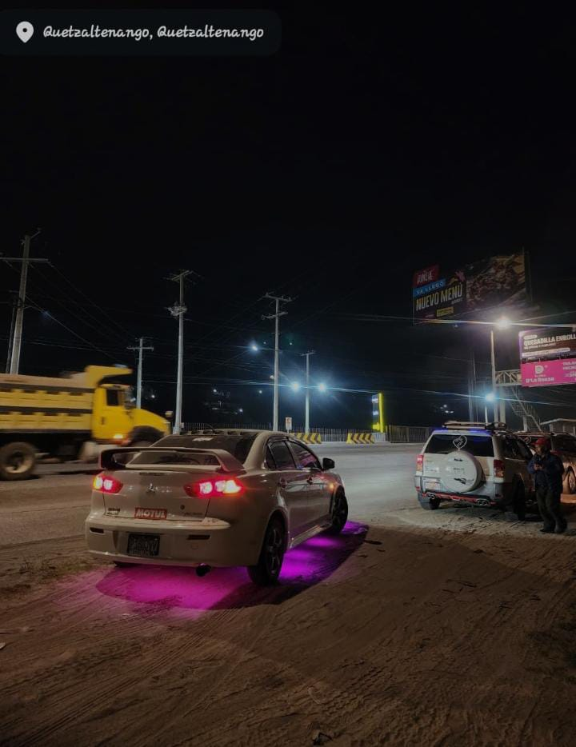
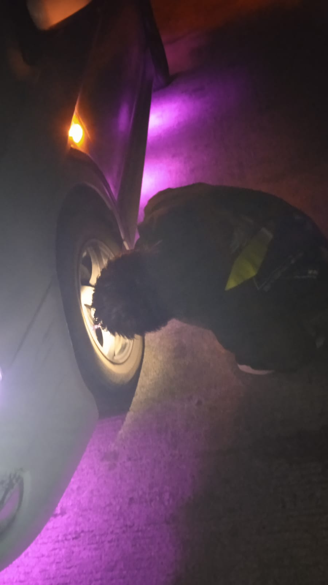
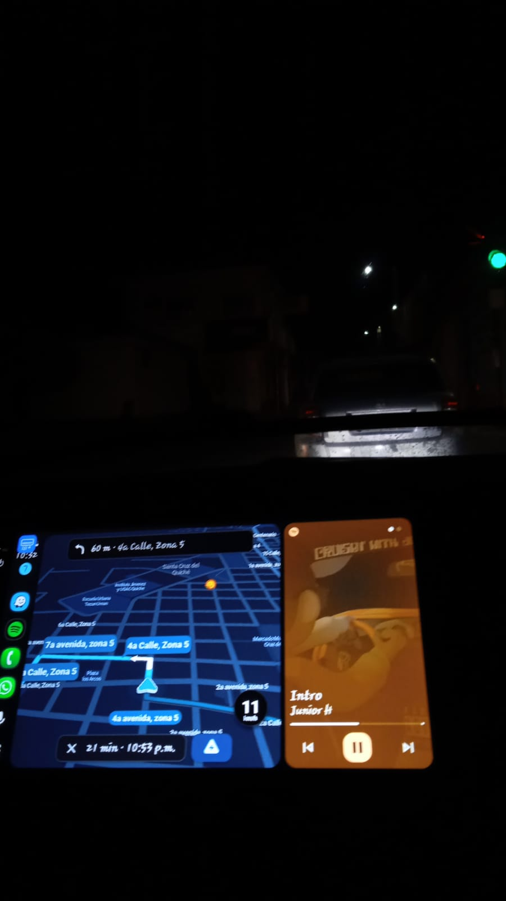
MI COLECCIÓN DE PERFUMES:
Mi colección de perfumes representa mi estilo personal: moderno, elegante y versátil. Me gustan las fragancias que proyectan seguridad, carácter y presencia, combinando aromas frescos para el día con opciones más dulces, intensas y seductoras para la noche. Cada perfume que tengo cumple una función distinta dependiendo de la ocasión y el clima.
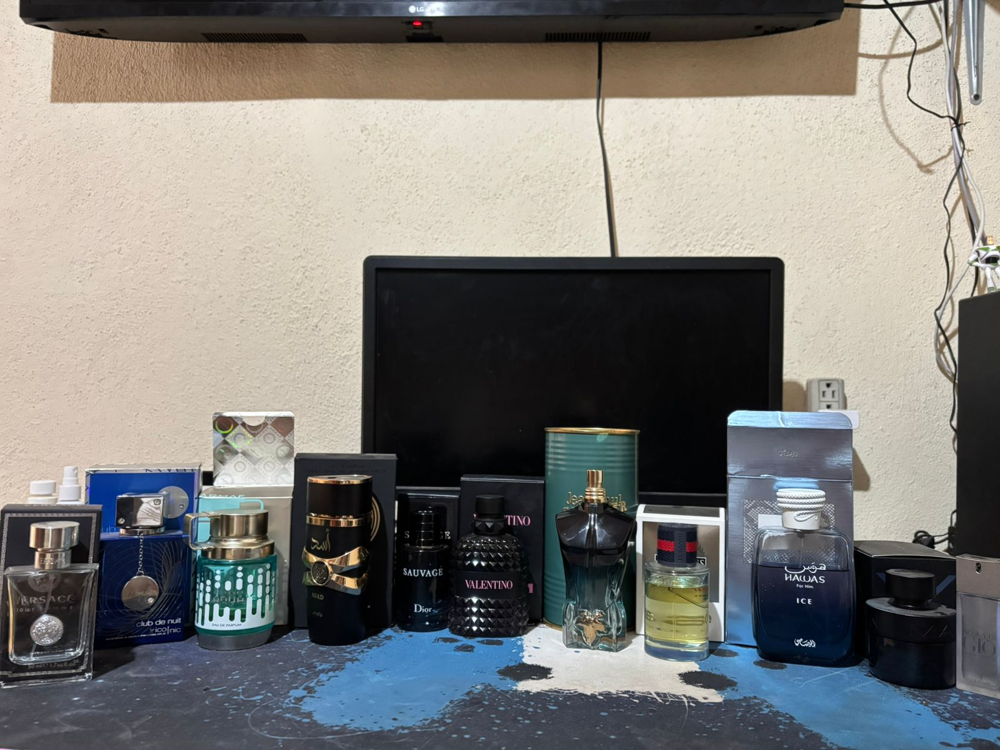
Versace Pour Homme Fragancia fresca y limpia con notas cítricas, neroli y madera ligera. Ideal para el uso diario y climas cálidos.
Armaf Club de Nuit Intense Man Aroma fresco, cítrico y moderno con toques de limón, pomelo y maderas. Elegante y versátil, ideal para cualquier ocasión.
Armaf Odyssey Aqua Fragancia acuática y refrescante con notas cítricas y marinas. Ligera y perfecta para días calurosos.
Lattafa Asad Perfume cálido, especiado y dulce con vainilla, pimienta y ámbar. Muy potente, ideal para la noche.
Dior Sauvage Aroma fresco y especiado con bergamota y ambroxan. Muy versátil y fácil de usar en cualquier momento.
Valentino Born in Roma Intense Fragancia dulce y sofisticada con vainilla y notas amaderadas. Elegante y perfecta para citas o eventos especiales.
Jean Paul Gaultier Le Beau Le Parfum Aroma dulce tropical con coco, vainilla y maderas. Seductor y llamativo para la noche.
Bravo Monsieur Fragancia fresca y amaderada con un estilo clásico y elegante. Ideal para ocasiones formales.
Rasasi Hawas Ice Aroma fresco, frutal y ligeramente dulce. Muy juvenil y perfecto para climas cálidos.
Halloween Man X Fragancia cálida y oscura con notas de café, whisky y especias. Perfecta para la noche.
Acqua di Giò de Giorgio Armani Aroma marino y cítrico con una sensación limpia y natural. Un clásico para uso diario.